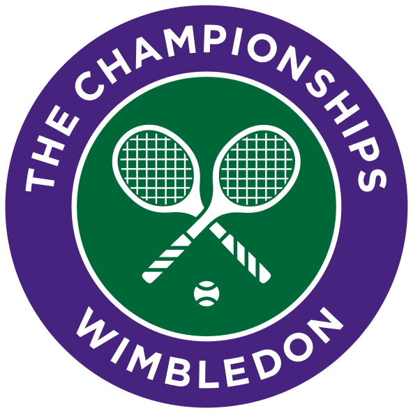

<nav class="navbar">
    <a href="../pages/index.html" class="logo">
        
    </a>
    <h2 class="nav-heading" style="margin-top: auto;margin-bottom: auto; margin-right: auto;">WIMBLEDON</h2>
    <button class="menu-toggle" id="menuToggle">
        <svg xmlns="http://www.w3.org/2000/svg" width="50" height="50" fill="currentColor" class="menu-icon bi bi-list" viewBox="0 0 25 25" class="menu">
            <path fill-rule="evenodd" d="M2.5 12a.5.5 0 0 1 .5-.5h10a.5.5 0 0 1 0 1H3a.5.5 0 0 1-.5-.5m0-4a.5.5 0 0 1 .5-.5h10a.5.5 0 0 1 0 1H3a.5.5 0 0 1-.5-.5m0-4a.5.5 0 0 1 .5-.5h10a.5.5 0 0 1 0 1H3a.5.5 0 0 1-.5-.5"/>
          </svg>
    </button>
    <ul class="nav-links" id="navLinks">
        <li><a href="../pages/index.html" >HOME</a></li>
        <li><a href="../pages/matches.html">MATCHES</a></li>
        <li><a href="../pages/players.html">PLAYERS</a></li>
        <li><a href="../pages/history.html">HISTORY</a></li>
    </ul>
</nav>

